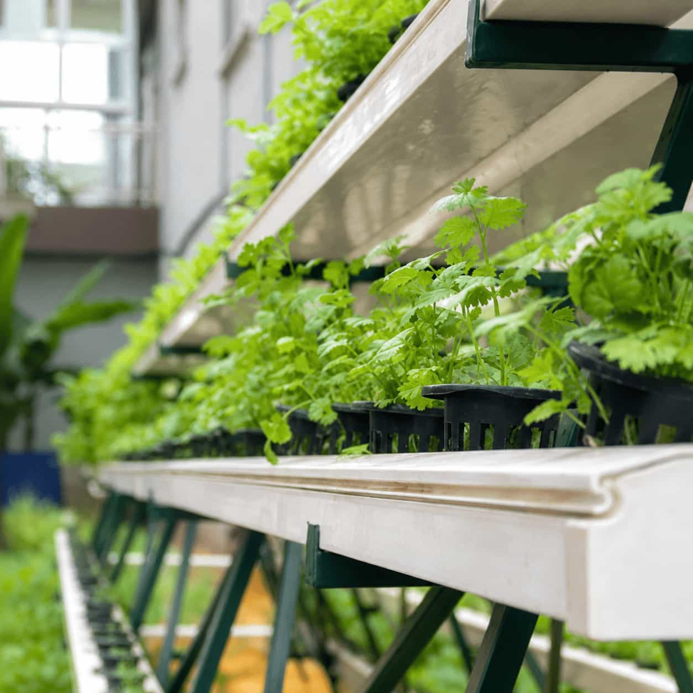
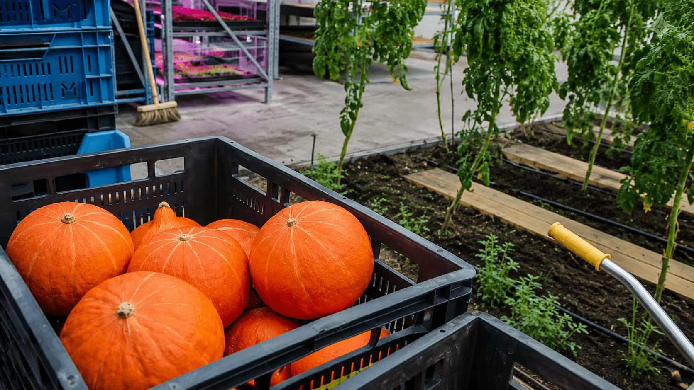
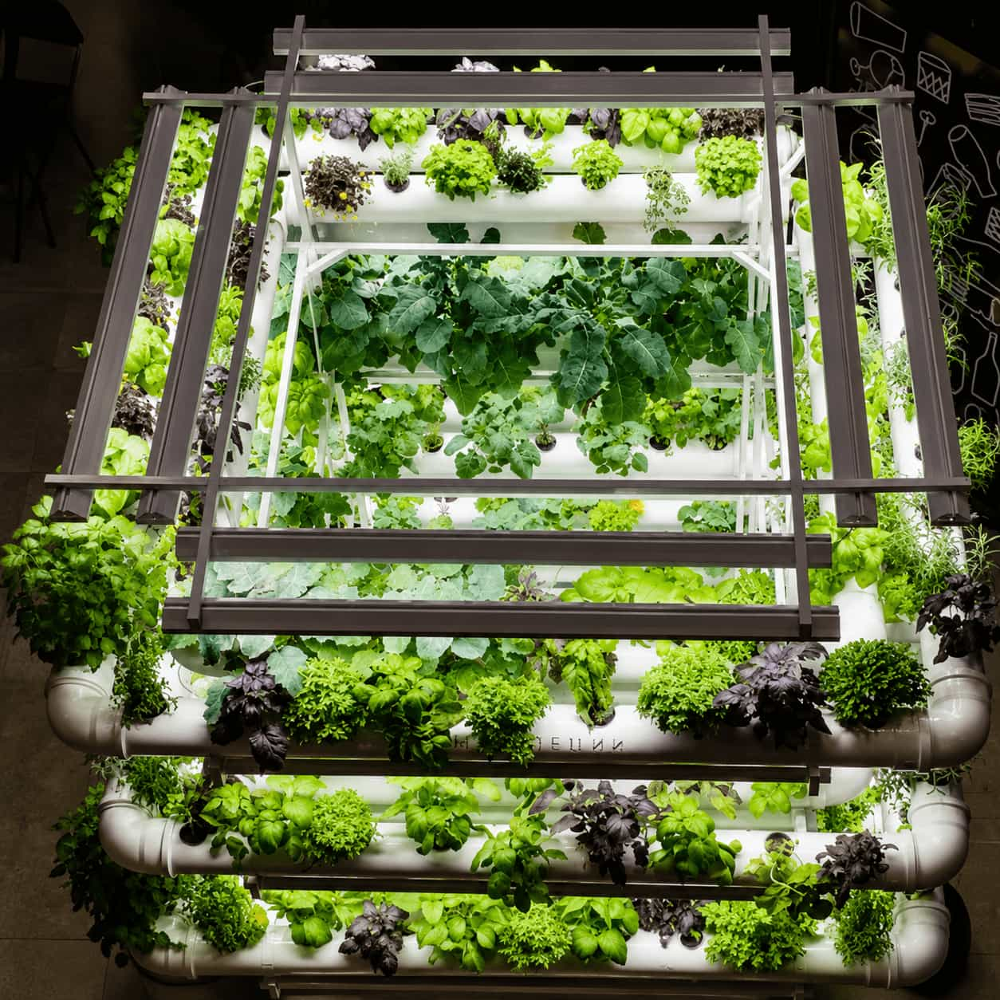
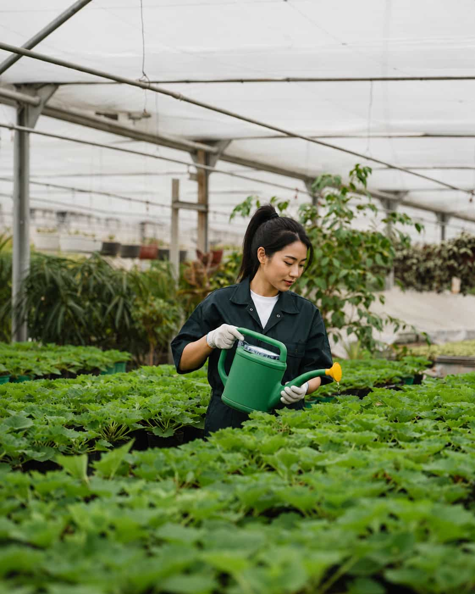
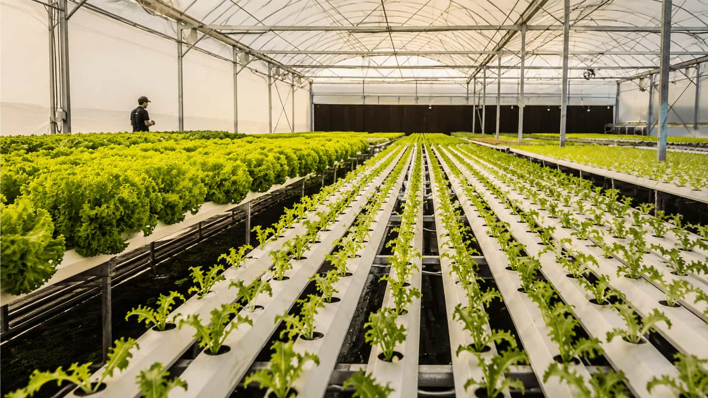
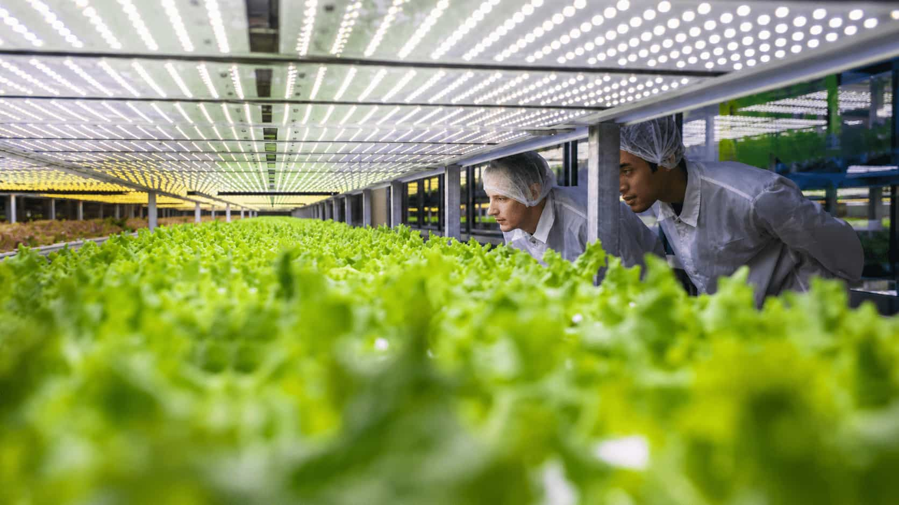
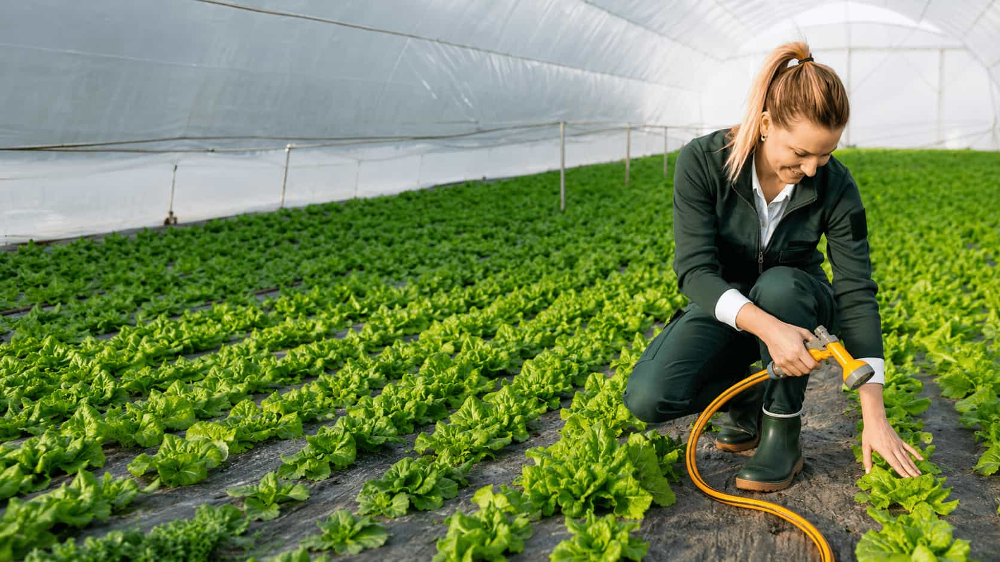

Container and Light Planning
Compare root space, drainage, window conditions, supplemental lighting, placement, and room access.

Compare reservoirs, timers, pumps, tubing, emitters, drainage, testing, maintenance, plant response, and failure planning before automating water delivery.
Compare root space, drainage, window conditions, supplemental lighting, placement, and room access.
Review moisture, pruning, airflow, plant response, harvesting, cleanliness, and seasonal changes.
General guidance for comparing indoor herb crops, containers, lighting, watering, pruning, and everyday care.
Selected herbs may grow near a suitably bright window. Actual results depend on the crop, season, window direction, surrounding buildings, plant position, and visible plant response.


Automatic watering can distribute water at planned times or in response to selected controls, but it cannot independently confirm that every plant, emitter, container, root zone, and drain is functioning as intended.
Crop type, plant size, container volume, growing medium, drainage, light, airflow, room heat, tubing layout, reservoir condition, and equipment reliability still shape actual water use.
Timers and controls can create a repeatable schedule, but the schedule must still be reviewed against actual plant and container conditions.
Tubing, emitters, wicks, drippers, valves, and distribution lines may deliver different amounts when pressure, height, clogs, or layout vary.
A blocked emitter, empty reservoir, leaking connection, failed pump, incorrect timer, power loss, or blocked drain can affect the whole setup.

Water source, delivery method, timing, drainage, crop needs, plant access, equipment condition, and interruption planning should be reviewed together.
Review capacity, refill access, covering, stability, cleaning, water quality context, placement, nearby surfaces, and what happens when the level becomes low.
Timers, controllers, sensors, valves, and manual overrides should remain understandable, accessible, testable, and suitable for the intended equipment.
Tubing length, height, pressure, emitter type, flow, wicks, valves, container position, clogs, and connection quality affect actual delivery.
Water should have a clear destination if containers drain, emitters run too long, tubing disconnects, reservoirs overflow, or a control fails.
Each format changes equipment count, water movement, crop compatibility, inspection, drainage, maintenance, and dependence on power or pressure.
Use the selector to compare practical questions around reservoirs, timers, pumps, tubing, emitters, drainage, and observation.
Reservoir capacity, covering, stability, refill access, cleaning, water source, surrounding surfaces, pump position, low-level behavior, and overflow planning influence the entire system.
Start with the actual crop and containers, then test water volume, delivery, drainage, controls, and interruption behavior before leaving the system unattended.
Compare plant type, size, growth stage, root volume, container dimensions, growing medium, drainage, light, airflow, temperature, and the current manual watering routine.

Compare drip lines, wicks, capillary mats, recirculating formats, or sensors according to crop demand, equipment, access, drainage, maintenance, and failure risk.
Arrange every component for stable support, visible connections, practical refilling, safe electrical separation, easy cleaning, container access, and clear overflow paths.
Run the system while observing the reservoir, pump, controls, first and last emitters, every container, tubing connections, collected water, drains, nearby surfaces, and shutdown behavior.
Review root-zone moisture, drainage, plant response, room conditions, emitter output, reservoir use, clogs, leaks, timer performance, and differences between containers before changing frequency or duration.


Automated delivery interacts with light, temperature, airflow, plant size, roots, container volume, growing media, drainage, equipment condition, and room use.
Review the growing medium, lower root zone, container weight, drainage, standing water, plant response, and differences between growing positions.
Observe pressure, flow, tubing height, clogs, bends, valves, plant position, container size, and whether the first and last points receive similar delivery.
Review saucers, trays, return lines, floors, shelving, overflow capacity, nearby equipment, standing water, and cleanup access.
Check saved settings, power, clock accuracy, manual override, sensor placement, valve behavior, pump operation, and actual start and stop times.
General information cannot guarantee correct water volume, plant health, leak prevention, sensor accuracy, pump reliability, drainage, or protection from equipment failure.
Plants grow, roots fill containers, emitters clog, tubing moves, reservoirs empty, timers reset, sensors drift, drains block, and room conditions change.
One blocked emitter, disconnected wick, empty reservoir, failed pump, closed valve, incorrect timer, or poor container contact may affect only part of the setup.
Excess duration, stuck valves, leaking tubing, blocked drainage, overflowing trays, or unsuitable container capacity can affect floors, shelving, equipment, and neighboring plants.
Timers, controllers, pumps, sensors, valves, and stored programs may fail or reset. Keep a manual checking routine and an accessible way to stop the system.
Use these questions to review whether the crop, containers, reservoir, controls, delivery points, drainage, and maintenance routine can work together.
Return to All Growing GuidesObserve crop type, plant size, container, growing medium, drainage, light, airflow, room heat, and changes through the growth cycle.
Confirm stability, refill access, covering, cleaning, water level checks, pump position, surrounding surfaces, spill response, and electrical separation.
Keep emitters, wicks, tubing, valves, bends, connectors, container entries, and the first and final points visible and accessible.
Review container drainage, saucers, trays, return lines, floors, shelving, overflow capacity, blocked drains, and nearby electrical equipment.
Run the full expected cycle while watching reservoir level, pump, controls, each emitter, each container, drainage, connections, and shutdown behavior.
Consider empty reservoirs, pump failure, timer reset, power loss, stuck valves, leaking tubing, blocked emitters, sensor error, and drainage failure.
These answers provide general planning context and do not replace equipment instructions, crop-specific guidance, plumbing advice, electrical advice, or qualified local support.
Ask a General QuestionNo. Plants, roots, containers, media, emitters, wicks, reservoirs, controls, drainage, tubing, connections, room conditions, and equipment still require regular observation.
Continue with hydroponic, lighting, crop, nutrient, and growing media topics connected to a practical watering setup.
Start with a manageable number of plants and build around visible delivery points, suitable containers, controlled timing, safe drainage, accessible equipment, and regular manual observation.